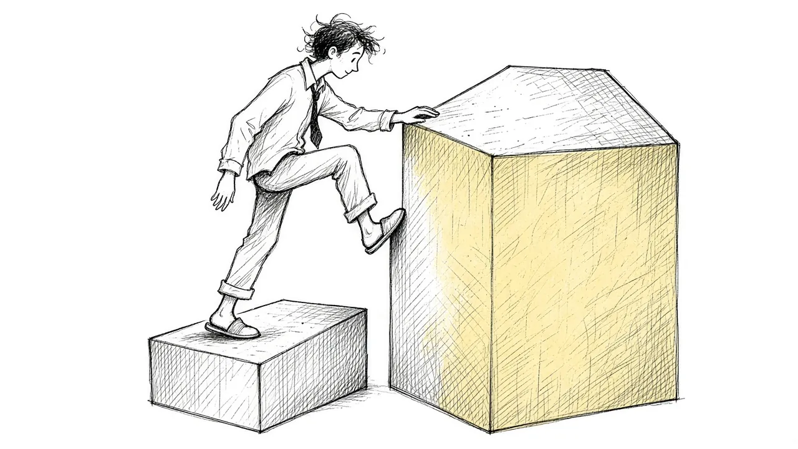

Why Grief Can Feel Worse in the Second Year

Many people brace for the first year after a loss. The first birthday without them. The first holidays. The first anniversary. They expect it to be the hardest stretch, and in many ways it is.
What surprises a lot of people is that the second year can feel worse. Some describe it as the year the grief truly landed. If you are in the second year and feel like you are going backward, you are not alone, and you are not doing grief wrong. This guide explains why year two can be so hard and what can help.
The first year often runs on shock
In the early months after a death, many people are cushioned by a kind of shock or numbness. The mind protects itself by letting the reality in slowly. You may function well enough to plan a funeral, sort paperwork, and return to work, all while part of you still cannot quite believe it.
The first year is also busy. There are tasks to handle, people checking in, and a series of "firsts" to get through. Getting through each one can feel like an accomplishment, and that sense of momentum can carry you.
Why year two can hit harder
The reality settles in
By the second year, the shock has often worn off. The truth that they are not coming back can feel more permanent and more real. Some people describe it as finally understanding the loss in their bones.
Support fades
In the first year, people often call, send cards, bring meals, and check in around anniversaries. By the second year, many people assume you are doing better. The calls slow down. Others stop mentioning the person. That can leave you feeling more alone just as the grief deepens.
There are no more firsts
The first year is marked by milestones. Getting through them can feel like an achievement. The second year can feel like a long stretch without markers, where you simply live without them, over and over.
Expectations clash with reality
Many people expect to feel better after the first year, and others expect it too. When grief does not lift, it is easy to feel like you are failing or stuck.
Secondary losses become clearer
In the second year, the ripple effects of the loss often become more visible. Changes in finances, friendships, family roles, or daily routines may now feel permanent. You may be grieving not just the person, but the life you had with them.
The second year is not a sign that you are going backward. It is often a sign that you are finally able to feel the full weight of what you lost.
Common experiences in year two
Many people in their second year notice:
- A deeper, quieter sadness rather than sharp waves
- Loneliness, especially as others move on
- Fatigue or a sense of heaviness that lingers
- Questions about identity and purpose
- Moments of grief that feel stronger than the first year
- Guilt about feeling better at times, or about not feeling better
All of these can be part of normal grief.
What can help in the second year
1. Expect it, and tell others
Knowing that year two can be hard may ease some of the shock. It can also help to tell the people close to you. Something like "The second year is actually harder in some ways. I still need you to check in" can make a real difference.
2. Create your own markers
Without the firsts to mark time, it can help to create your own rituals. That might be a monthly walk in their honor, a yearly gathering, or a small act on their birthday. Our guide to grief rituals offers ideas.
3. Revisit what you postponed
Some people put grief on hold during the busy first year. In the second year, it may be time to look at photos, sort belongings, or have conversations you could not face before. Go slowly. See Making Decisions After a Loss for help with belongings and big choices.
4. Look for people who understand
If friends and family have pulled back, a support group or counselor can offer steady understanding. Many people find that others further along in grief can say things that help in a way nothing else does.
5. Be gentle with yourself
There is no deadline for grief. Feeling worse in year two does not mean you are doing something wrong. It means you are still grieving someone who mattered.
The second anniversary
The second anniversary can be strangely lonely. The first one often draws calls, flowers, and gatherings. By the second, fewer people remember the date, and you may feel you are the only one marking it. Some people find it helps to plan the day ahead of time rather than waiting to see how it feels. You might:
- Invite one or two people to share a meal or visit a meaningful place
- Write them a letter about the past year
- Do something they loved, like a hike or a favorite recipe
- Take the day off and keep it quiet, if that is what you need
There is no right way to mark it. What matters is that you decide, rather than letting the day ambush you.
Year two and the people who are still here
The second year can also strain relationships within a family. One person may seem to be doing better while another is struggling more. Partners can grieve on different schedules. Children may revisit the loss as they grow and understand it in new ways. Talking openly about where each person is, without comparing, can help everyone feel less alone.
When to seek more support
Sometimes the second year brings grief that feels stuck or overwhelming. It may help to speak with a counselor or doctor if:
- Daily life has become very hard for an extended time
- You feel hopeless or numb most of the time
- You have withdrawn from almost everyone
- You are drinking or using substances to cope
- You are having thoughts of ending your life
These can be signs of prolonged grief or depression, both of which respond to support. Our guide on prolonged grief explains the difference.
If you are thinking about suicide, please call or text 988 now to reach the Suicide and Crisis Lifeline.
What comes after
There is no rule about when grief eases. Still, many people find that, somewhere after the second year, things slowly shift. The waves come less often or less fiercely. Memories bring more warmth along with the ache. Life grows around the loss.
That does not mean the grief disappears. It means you learn to carry it. If you are in the middle of year two and it feels unbearable, know that it is not the end of the story. You are still adjusting to something enormous, and that takes time.
A note for those supporting someone
If you know someone in their second year of grief, this is often the time they need you most. A text on an ordinary day, mentioning the person by name, or asking how they are really doing can mean more than you know. You do not need to fix anything. Just keep showing up.
This article is for general information and support. It is not medical or mental health advice. If grief has become unbearable or you are thinking about harming yourself, call or text 988 right now.
Related reading

Grief Alongside Depression and Anxiety
Grief often arrives alongside other mental health challenges. How to recognize overlap and get support for all of it.

Why Your Brain Keeps Replaying Their Last Days
Memories of the final days or moments can loop relentlessly. Here is why that happens and how to let the rest of their life back in.

Rumination in Grief: Getting Off the "What If" Wheel
Endless what-ifs and if-onlys can trap grieving people. Learn why rumination happens and gentle ways to step off the wheel.